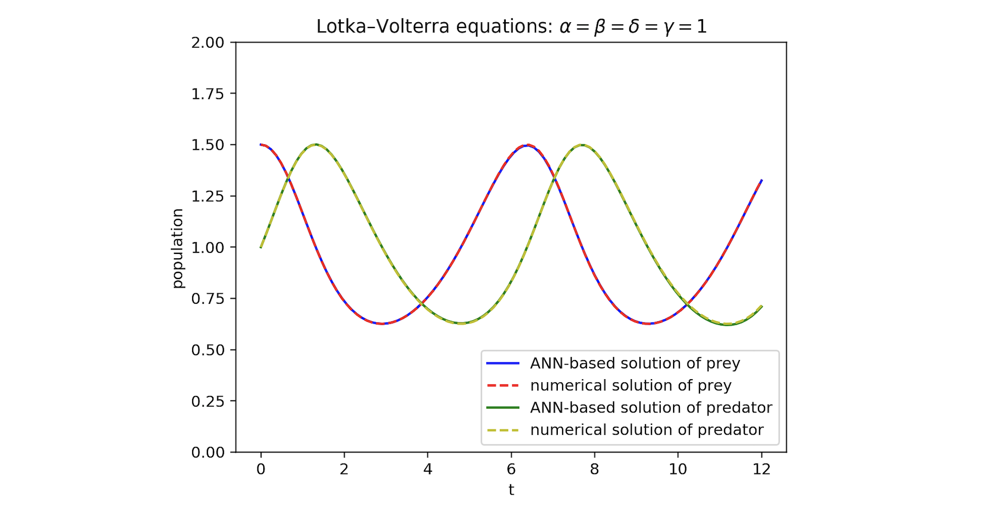
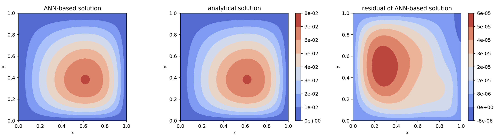

Introduction¶
Differential equations emerge in various scientific and engineering domains for modeling physical phenomena. Most differential equations of practical interest are analytically intractable. Traditionally, differential equations are solved by numerical methods. Sophisticated algorithms exist to integrate differential equations in time and space. Time integration techniques continue to be an active area of research and include backward difference formulas and Runge-Kutta methods. Common spatial discretization approaches include the finite difference method (FDM), finite volume method (FVM), and finite element method (FEM) as well as spectral methods such as the Fourier-spectral method. These classical methods have been studied in detail and much is known about their convergence properties. Moreover, highly optimized codes exist for solving differential equations of practical interest with these techniques. While these methods are efficient and well-studied, their expressibility is limited by their function representation.
Artificial neural networks (ANN) are a framework of machine learning algorithms that use a collection of connected units to learn function mappings. The most basic form of ANNs, multilayer perceptrons, have been proven to be universal function approximators. This suggests the possibility of using ANNs to solve differential equations. Previous studies have demonstrated that ANNs have the potential to solve ordinary differential equations (ODEs) and partial differential equations (PDEs) with certain initial/boundary conditions. These methods show nice properties including (1) continuous and differentiable solutions, (2) good interpolation properties, (3) less memory-intensive. By less memory-intensive we mean that only the weights of the neural network have to be stored. The solution can then be recovered anywhere in the solution domain because a trained neural network is a closed form solution.
Given the interest in developing neural networks for solving differential equations, it would be extremely beneficial to have an easy-to-use software package that allows researchers to quickly set up and solve problems.
Differential Equations¶
Differential equations can be divided into 2 types: ordinary differential equations (ODEs) and partial differential equations (PDEs).
Ordinary Differential Equations¶
An ordinary differential equation (ODE) is an differential equation that contains only one independent variable (a scalar). Let \(t \in \mathbb{R}\) be the independent variable and \(x: \mathbb{R} \to \mathbb{R}\) be a function of \(t\). An ordinary differential equation of order \(n\) takes the form:
A general solution of an \(n\)th-order equation is a solution containing \(n\) arbitrary independent constants of integration. A particular solution is derived from the general solution by setting the constants to particular values. This is often done by imposing an initial condition or boundary condition to the ODE. The former corresponds to an initial value problem (IVP) and the latter a boundary value problem (BVP).
Initial Value Problems¶
For the following ODE:
If we specify that
then we have an initial value problem. Initial value problem can be seen as the question of how \(x\) will evolve with time given \(x=x_0\) at time \(t=t_0\).
Boundary Value Problems¶
A boundary value problem has conditions specified at the boundaries of the independent variables. In the context of ordinary differential equations, a boundary problem is one that put some restrictions on \(x\) at the initial \(t\) and final \(t\). There are several kinds of boundary conditions.
For the following ODE:
If we specify that
then we have a Dirichlet boundary condition.
If we specify that
then we have a Neumann boundary condition.
If we specify that
then we have a Robin boundary condition.
Boundary conditions of mixed types can also be specified on a different subset of the boundaries (In this case, that will be one boundary condition for \(t = t_{ini}\) and another boundary condition of a different type for \(t = t_{fin}\)).
System of Ordinary Differential Equations¶
A number of coupled differential equations form a system of equations. Let \(t \in \mathbb{R}\) be the independent variable and \(\vec{x}: \mathbb{R} \to \mathbb{R^m}\) be a function of \(t\). A system of ordinary differential equations of order \(n\) takes the form:
This can be written in matrix form as
Partial Differential Equations¶
A partial differential equation (PDE) is a differential equation that contains multiple independent variables. ODEs can be seen as a special case of PDEs. A partial differential equation of \(u(x_1 \ldots x_n)\) with \(n\) independent variables takes the form:
Similar as PDE, a general solution of a PDE contains arbitrary independent constants of integration. A particular solution is derived from the general solution by setting the constants to particular values. To fix to a particular solution, we need to impose initial value conditions and boundary value conoditions as well.
About NeuroDiffEq¶
NeuroDiffEq is a Python package built with PyTorch that uses ANNs to solve ordinary and partial differential equations (ODEs and PDEs). It is designed to encourage the user to focus more on the problem domain (What is the differential equation we need to solve? What are the initial/boundary conditions?) and at the same time allow them to dig into solution domain (What ANN architecture and loss function should be used? What are the training hyperparameters?) when they want to.
NeuroDiffEq can solve a variety of canonical PDEs including the heat equation and Poisson equation in a Cartesian domain with up to two spatial dimensions. We are actively working on extending NeuroDiffEq to support three spatial dimensions. NeuroDiffEq can also solve arbitrary systems of nonlinear ordinary differential equations.
Two examples¶
Lotka–Volterra equations¶
The Lotka–Volterra equations are a system of first-order, nonlinear ODEs that have been used to model predator-prey dynamics in biological systems as well as problems in chemical kinetics. They are given by:
The time-evolution of the population of the prey and predator are given by \(x\) and \(y\), respectively, with \(x_{0}\) and \(y_{0}\) the initial populations. The coupling parameters \(\alpha\), \(\beta\), \(\delta\) and \(\gamma\) describe the interaction of the two species. Let \(\alpha = \beta = \delta = \gamma = 1\), \(x_{0} = 1.5\), and \(y_{0} = 1.0\). For comparison purposes, we solve this problem numerically with scipy and NeuroDiffEq.
Figure 1 compares the predator and prey populations from the numerical integrator and the neural network. The solutions are qualitatively the same.
 Figure 1: Comparing numerical and ANN-based solutions of Lotka–Volterra equations.
Poisson’s equation¶
Poisson’s equation is a second-order linear PDE. It can be used to describe the potential field caused by a given charge or mass density distribution. In two dimensional Cartesian coordinates, it takes the form:
We solve the equation in the domain \((x, y) \in (0, 1) \times (0, 1)\) with homogeneous Dirichlet boundary conditions,
With \(f(x, y) = 2x(y-1)(y-2x+xy+2)e^{x-y}\) the analytical solution is
Figure 2 presents contours of the neural network solution (left), the analytical solution (middle), and the error between the analytical and neural network solution (right). The largest error in the neural network solution is around \(6\cdot 10^{-5}\).
 Figure 2: Comparing analytical and ANN-based solutions of Poisson’s equation.
[ ]: